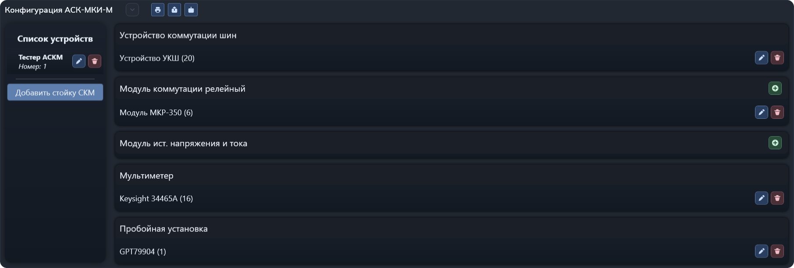
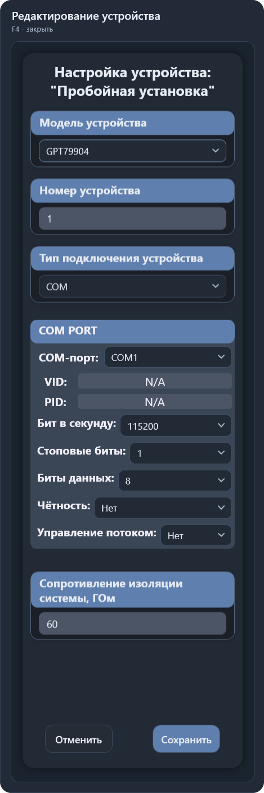

Раздел "Конфигурация"
Раздел предназначен для конфигурации стоек и модулей.
На рисунке 1 показана левая часть раздела. В ней мы можем управлять и выбирать нужную нам стойку для конфигурации.

На рисунке 2 показана правая часть раздела. В ней можно изменить конфигурацию выбранной стойки в ручном и автоматическом режиме.

Чтобы добавить новое устройство в конфигурацию стойки, нужно указать следующие данные (рисунок 3):
- "Модель устройства"
- "Номер устройства" - по данному номеру мы сможем обращаться к устройству через программу.
- "Тип подключения устройства" - то, как устройство общается со стойкой и программой.
После выбора типа подключения ниже появятся данные для соединения с устройством.